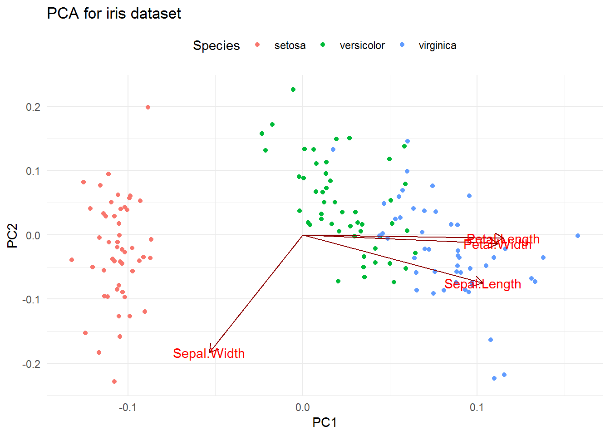

5. Principal component analysis¶
5.1. Giới thiệu¶
Pricipal Component Analysis và Factor Analysis không quan tâm
đến việc dự báo do không có biến cần dự báo trước. Các kỹ thuật này trả
lời các câu hỏi sau
- Liệu tồn tại các nhóm giữa các đối tượng trong dữ liệu?
- Làm thế nào để giảm số lượng các biến?
- Liệu có tồn tại mối quan hệ ẩn giữa các biến?
So sánh giữa PCA và FA
PCA & FA là 2 phương pháp có quan hệ mật thiết với nhau. Có thể coi FA là phương pháp ngược lại với PCA
- PCA là kỹ thuật giảm số lượng các biến có tương quan với nhau thành 1 số ít biến không tương quan và vẫn đảm bảo được càng nhiều thông tin (variance) của tập dữ liệu gốc càng tốt. VD: Giảm 30 biến thành 2 biến mới không tương quan với nhau, vẫn giữ được phần lớn lượng thông tin (ít nhất 80%) so với dữ liệu gốc. Mỗi biến mới được gọi là 1 “Principal Component”
- FA là kỹ thuật tìm những biến “ẩn” ảnh hưởng đến các dữ liệu gốc. VD: 30 biến từ tập dữ liệu gốc được tổ hợp từ 4 biến ẩn (latent factor)
5.2. Lý thuyết¶
Gọi \(X_1,...,X_p\) là các biến trong tập dữ liệu ban đầu.
\(PC_1\) (The first principal component) là tổ hơp tuyến tính đã
chuẩn hóa của X (normalized linear combination):
Chuẩn hóa (normalized) được định nghĩa là:
\(\phi_{11},...,\phi_{p1}\) được gọi là “loadings” của PC1
\(Z_2\) được gọi là \(PC_2\) nếu \(Z_2\) thỏa mãn các điều kiện tương tự như \(PC_1\) và \(Z_2\) vuông góc với \(Z_1\), nghĩa là:
Thuật toán:
- Chuẩn hóa ma trận phương sai, hiệp phương sai của tập dữ liệu gốc về dạng chuẩn N(0,1)
- Tìm giá trị riêng và vectơ riêng (eigen value - eigen vector) của ma trận trên
- Mỗi tổ hợp của giá trị riêng của vector riêng là một PC
Ý nghĩa:
- \(PC_1\) là tổ hợp tuyến tính của các biến X mà trong đó, phương sai của cả tập dữ liệu thay đổi nhiều nhất
- \(PC_2\) là chiều thứ 2 của dữ liệu, vuông góc với dữ liệu 1, var biến đổi nhiều thứ nhì
Lựa chọn số PC:
Có 3 cách lựa chọn sau:
- Lựa chọn dưa trên lý thuyết đã biết
- Lựa chọn PC có giá trị riêng lớn hơn 1
- Lựa chọn số PC cho đến khi tổng var của tất cả các PC lớn hơn hoặc bằng 80% var của tập dữ liệu gốc
5.3. Thực hành¶
library(psych)
library(dplyr)
library(broom)
data <- iris %>% select(-Species)
describe(data)
## vars n mean sd median trimmed mad min max range skew
## Sepal.Length 1 150 5.84 0.83 5.80 5.81 1.04 4.3 7.9 3.6 0.31
## Sepal.Width 2 150 3.06 0.44 3.00 3.04 0.44 2.0 4.4 2.4 0.31
## Petal.Length 3 150 3.76 1.77 4.35 3.76 1.85 1.0 6.9 5.9 -0.27
## Petal.Width 4 150 1.20 0.76 1.30 1.18 1.04 0.1 2.5 2.4 -0.10
## kurtosis se
## Sepal.Length -0.61 0.07
## Sepal.Width 0.14 0.04
## Petal.Length -1.42 0.14
## Petal.Width -1.36 0.06
pr.out <- prcomp(data, scale = T) #Scale data
pr.out
## Standard deviations (1, .., p=4):
## [1] 1.7083611 0.9560494 0.3830886 0.1439265
##
## Rotation (n x k) = (4 x 4):
## PC1 PC2 PC3 PC4
## Sepal.Length 0.5210659 -0.37741762 0.7195664 0.2612863
## Sepal.Width -0.2693474 -0.92329566 -0.2443818 -0.1235096
## Petal.Length 0.5804131 -0.02449161 -0.1421264 -0.8014492
## Petal.Width 0.5648565 -0.06694199 -0.6342727 0.5235971
pr.out %>% summary
## Importance of components%s:
## PC1 PC2 PC3 PC4
## Standard deviation 1.7084 0.9560 0.38309 0.14393
## Proportion of Variance 0.7296 0.2285 0.03669 0.00518
## Cumulative Proportion 0.7296 0.9581 0.99482 1.00000
Trong ví dụ trên, ta thấy PC2 đã cover được 95% độ biến động của dữ
liệu. Do đó, ta có thể chọn 2 nhân tố chính để thực hiện PCA. Kết
quả trực quan hóa sau khi thực hiện PCA như sau.
library(ggfortify)
autoplot(pr.out, loadings = TRUE,
col = "Species",
loadings.colour = "darkred",
loadings.label = T,
data = iris) +
theme_minimal() +
theme(legend.position = "top") +
labs(title = "PCA for iris dataset")

Trong ví dụ trên, ta thấy loài hoa setosa được phân thành nhóm riêng
và yếu tố được tách nhánh nhiều nhất của nhóm này là Sepal. Trong
khi đó, hai loại hoa còn lại khác nhau phần lớn ở thuộc tính Petal